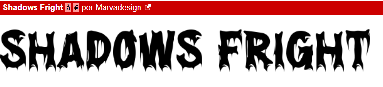
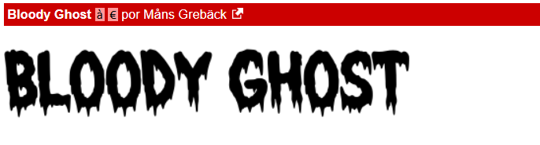
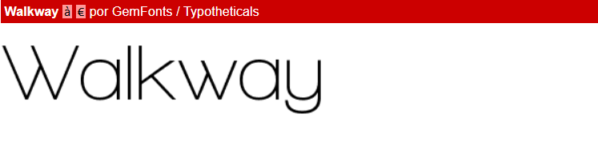
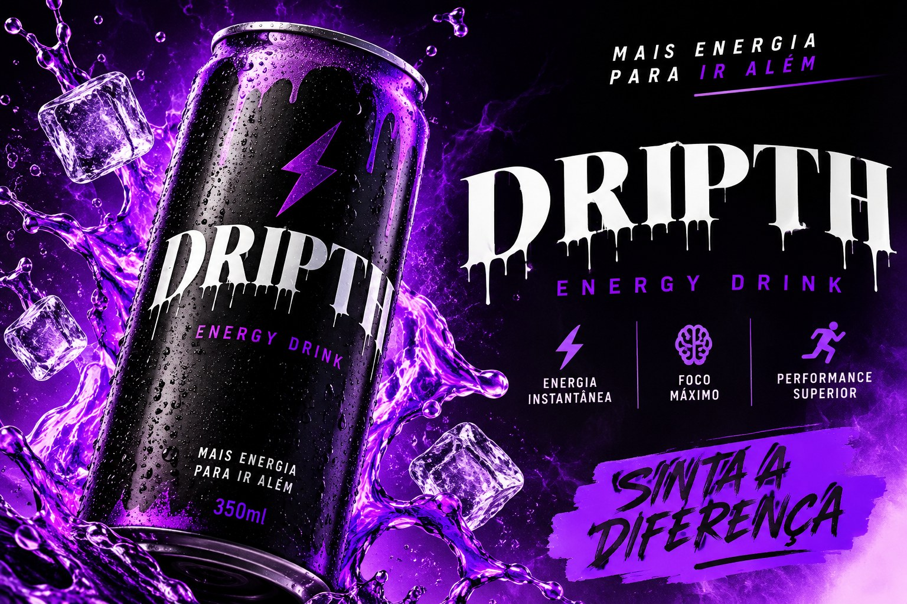
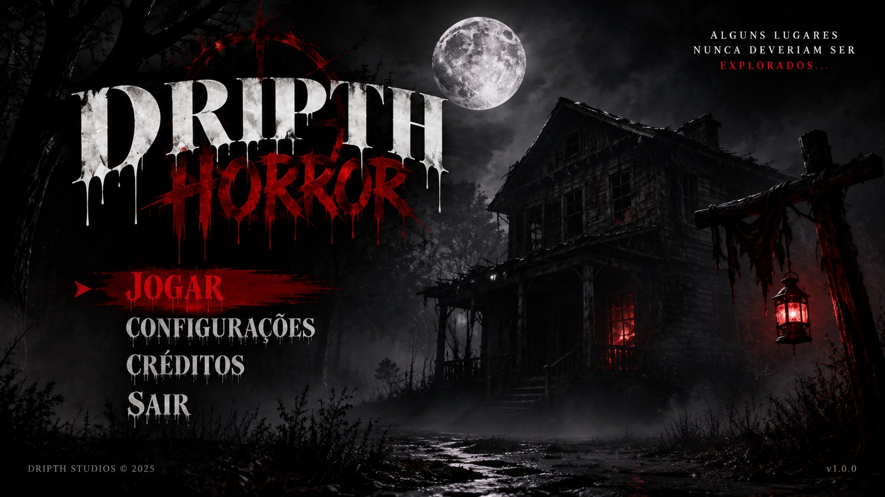
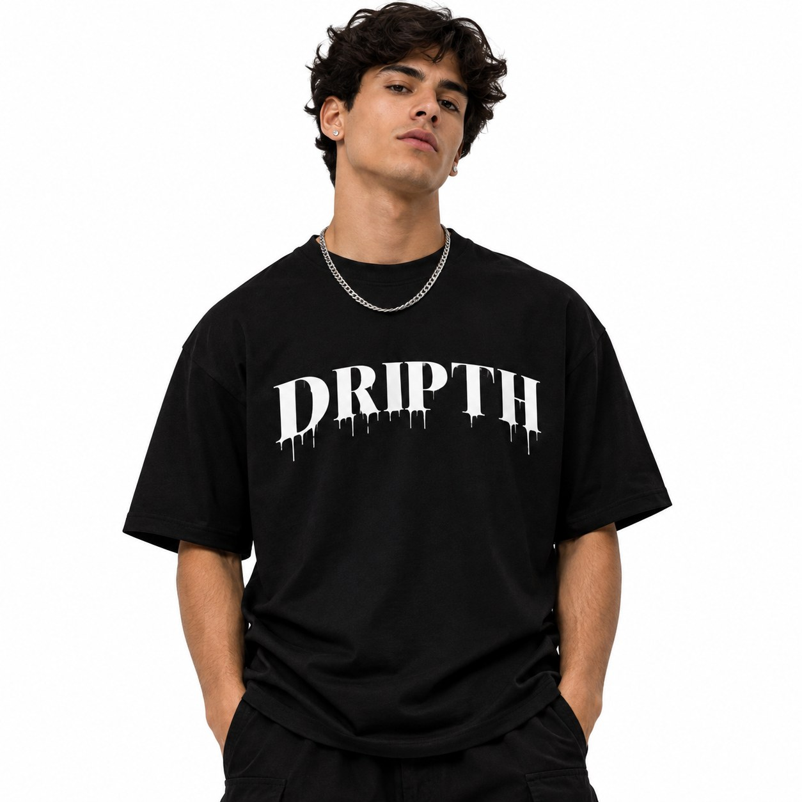

DRIPTH
Fonte autoral gótica serifada, criada para logos, títulos e cartazes.
Role para conhecer a fonteConceito
DRIPTH é uma fonte de exposição. Ela não foi pensada para textos longos, e sim para quem precisa de um título ou uma marca que seja visto primeiro.
- Objetivo
- Chamar atenção em logos e títulos, não servir para leitura contínua.
- Mídias
- Marcas de streetwear, cartazes de bandas e filmes, produtos em lata com temática dark e jogos de terror.
- Estilo e peso
- Gótica e serifada, em bold/extrabold, com partes pesadas nos caracteres e contraste entre hastes finas e grossas.
- Alfabeto
- Latino, com maiúsculas, minúsculas (incluindo ç), números e pontuação.
- Personalidade
- Forte, obscura e rebelde, próxima dos estilos underground.
Referencias e processo
Três fontes serviram de ponto de partida. Duas trazem o peso e o gotejamento do universo dark, e uma mostra a leveza de um traço fino, que ajuda a pensar o contraste entre hastes.



Decisoes do projeto
- Estilo gótico com serifas, para dar um tom sombrio e imponente.
- Peso bold/extrabold, com contraste claro entre hastes finas e grossas.
- Gotejamento nas bases das letras, que vira a assinatura visual da fonte.
- Uso exclusivo em exposição: logos, títulos, cartazes e embalagens.
- Conjunto latino completo, com ç, números e a pontuação pedida.
Alfabeto
Todos os caracteres desenvolvidos. Clique em um deles para ver em tamanho grande.
Tamanhos
A mesma frase em seis tamanhos. Nos menores a fonte ainda funciona, mas ela rende mais de 36 px para cima.
Algumas coisas nunca deveriam ser exploradas
Algumas coisas nunca deveriam ser exploradas
Algumas coisas nunca deveriam ser exploradas
Algumas coisas nunca deveriam ser exploradas
Mais energia para ir alem
Dripth
Teste você mesmo
Sinta a diferença
Aplicaçoes
Três usos que mostram a DRIPTH em contextos diferentes: embalagem, jogo e moda.

Energético em lata
Embalagem e anúncio de uma bebida energética. A DRIPTH assina a lata e o título, sobre preto e roxo elétrico.

Menu de jogo de terror
Tela inicial de um jogo de terror. A fonte aparece no título e nas opções do menu, com vermelho sangue como destaque.

Streetwear
Estampa em camiseta oversized preta. O branco sobre o preto deixa o gotejamento das letras em primeiro plano.